experiment package¶
Submodules¶
experiment.beads module¶
| Author: | Dominic Hunt |
|---|---|
| Reference: | Jumping to conclusions: a network model predicts schizophrenic patients’ performance on a probabilistic reasoning task. Moore, S. C., & Sellen, J. L. (2006). Cognitive, Affective & Behavioral Neuroscience, 6(4), 261–9. Retrieved from http://www.ncbi.nlm.nih.gov/pubmed/17458441 |
-
class
experiment.beads.Beads(**kwargs)[source]¶ Bases:
experiment.experimentTemplate.experimentBased on the Moore&Sellen Beads task
Many methods are inherited from the experiment.experiment.experiment class. Refer to its documentation for missing methods.
Parameters: N : int, optional
Number of beads that could potentially be shown
beadSequence : list or array of {0,1}, optional
The sequence of beads to be shown. Bead sequences can also be embedded in the code and then referred to by name. The only current one is MooreSellen, the default sequence.
plotArgs : dictionary, optional
Any arguments that will be later used by
experimentPlot. Refer to its documentation for more details.Attributes
Name (string) The name of the class used when recording what has been used. -
Name= 'beads'¶
-
class
experimentPlot(expSet, expParams, expLabels, modelSet, modelParams, modelLabels, plotArgs)[source]¶
-
Beads.next()[source]¶ Produces the next bead for the iterator
Returns: bead : {0,1}
nextValidActions : Tuple of ints or
NoneThe list of valid actions that the model can respond with. Set to (0,1), as they never vary.
Raises: StopIteration
-
Beads.outputEvolution()[source]¶ Returns all the relevant data for this experiment run
Returns: results : dictionary
The dictionary contains a series of keys including Name, Observables and Actions.
-
Beads.receiveAction(action)[source]¶ Receives the next action from the participant
Parameters: action : {1,2, None}
-
-
experiment.beads.beadRewDirect()[source]¶ Processes the beads reward for models expecting just the reward
Returns: beadRew : function
The function expects to be passed a tuple containing the reward and the last action. The function returns the reward.
Attributes
Name (string) The identifier of the function
-
experiment.beads.beadStimDirect()[source]¶ Processes the beads stimuli for models expecting just the event
Returns: beadStim : function
The function expects to be passed the event and a decision of
{1,2, None}and then return it.See also
Attributes
Name (string) The identifier of the function
-
experiment.beads.beadStimDualDirect()[source]¶ Processes the beads stimuli for models expecting a tuple of
[event,1-event]Returns: beadStim : function
The function expects to be passed the event and a decision of {1,2, None} and then return
[event,1-event], where the event is expected to be{1,0}.See also
Attributes
Name (string) The identifier of the function
-
experiment.beads.beadStimDualInfo(oneProb)[source]¶ Processes the beads stimuli for models expecting the reward information from two possible actions
Parameters: oneProb : float in
[0,1]The probability of a 1 from the first jar. This is also the probability of a 0 from the second jar.
event_infois calculated asoneProb*event + (1-oneProb)*(1-event)Returns: beadStim : function
The function expects to be passed the event and a decision of {1,2, None} and then return
[event_info,1-event_info].See also
Attributes
Name (string) The identifier of the function
-
experiment.beads.generateSequence(numBeads, oneProb, switchProb)[source]¶ Designed to generate a sequence of beads with a probability of switching jar at any time.
Returns: sequence : list of
{0,1}The generated sequence of beads
-
experiment.beads.rand(d0, d1, ..., dn)¶ Random values in a given shape.
Create an array of the given shape and propagate it with random samples from a uniform distribution over
[0, 1).Parameters: d0, d1, ..., dn : int, optional
The dimensions of the returned array, should all be positive. If no argument is given a single Python float is returned.
Returns: out : ndarray, shape
(d0, d1, ..., dn)Random values.
See also
Notes
This is a convenience function. If you want an interface that takes a shape-tuple as the first argument, refer to np.random.random_sample .
Examples
>>> np.random.rand(3,2) array([[ 0.14022471, 0.96360618], #random [ 0.37601032, 0.25528411], #random [ 0.49313049, 0.94909878]]) #random
experiment.decks module¶
| Author: | Dominic Hunt |
|---|---|
| Reference: | Regulatory fit effects in a choice task Worthy, D. a, Maddox, W. T., & Markman, A. B. (2007). Psychonomic Bulletin & Review, 14(6), 1125–32. Retrieved from http://www.ncbi.nlm.nih.gov/pubmed/18229485 |
-
class
experiment.decks.Decks(**kwargs)[source]¶ Bases:
experiment.experimentTemplate.experimentBased on the Worthy&Maddox 2007 paper “Regulatory fit effects in a choice task.
Many methods are inherited from the experiment.experiment.experiment class. Refer to its documentation for missing methods.
Parameters: draws: int, optional
Number of cards drawn by the participant
decks: array of floats, optional
The decks of cards
plotArgs : dictionary, optional
Any arguments that will be later used by
experimentPlot. Refer to its documentation for more details.Attributes
Name (string) The name of the class used when recording what has been used. -
Name= 'decks'¶
-
next()[source]¶ Produces the next stimulus for the iterator
Returns: stimulus : None
nextValidActions : Tuple of ints or
NoneThe list of valid actions that the model can respond with. Set to (0,1), as they never vary.
Raises: StopIteration
-
-
experiment.decks.deckRewAllInfo(maxRewardVal, minRewardVal, numActions)[source]¶ Processes the decks reward for models expecting the reward information from all possible actions
Parameters: maxRewardVal : int
The highest value a reward can have
minRewardVal : int
The lowest value a reward can have
numActions : int
The number of actions the participant can perform. Assumes the lowest valued action is 0
Returns: deckRew : function
The function expects to be passed a tuple containing the reward and the last action. The reward that is a float and action is {0,1}. The function returns a array of length (maxRewardVal-minRewardVal)*numActions.
See also
model.BP,model.EP,model.MS_rev,model.decision.binary.decIntEtaReacExamples
>>> from experiment.decks import deckRewAllInfo >>> rew = deckRewAllInfo(10,1,2) >>> rew(6,0) array([ 0, 0, 0, 0, 0, 1, 0, 0, 0, 0, 0, 0, 0, 0, 0, 0, 0, 0, 0, 0]) >>> rew(6,1) array([ 0, 0, 0, 0, 0, 0, 0, 0, 0, 0, 0, 0, 0, 0, 0, 1, 0, 0, 0, 0])
Attributes
Name (string) The identifier of the function
-
experiment.decks.deckRewDirect()[source]¶ Processes the decks reward for models expecting just the reward
Returns: deckRew : function
The function expects to be passed a tuple containing the reward and the last action. The function returns the reward.
Attributes
Name (string) The identifier of the function
-
experiment.decks.deckRewDirectNormal(maxRewardVal)[source]¶ Processes the decks reward for models expecting just the reward, but in range [0,1]
Parameters: maxRewardVal : int
The highest value a reward can have
Returns: deckRew : function
The function expects to be passed a tuple containing the reward and the last action. The function returns the reward.
See also
model.opal,model.opalsAttributes
Name (string) The identifier of the function
-
experiment.decks.deckRewDualInfo(maxRewardVal, epsilon)[source]¶ Processes the decks reward for models expecting the reward information from two possible actions.
Returns: deckRew : function
The function expects to be passed a tuple containing the reward and the last action. The reward that is a float and action is {0,1}. The function returns a list of length 2.
See also
Attributes
Name (string) The identifier of the function
-
experiment.decks.deckRewDualInfoLogistic(maxRewardVal, minRewardVal, epsilon)[source]¶ Processes the decks rewards for models expecting the reward information from two possible actions.
Returns: deckRew : function
The function expects to be passed a tuple containing the reward and the last action. The reward is a float and action is {0,1}. The function returns a list of length 2.
See also
Attributes
Name (string) The identifier of the function
-
experiment.decks.deckStimDirect()[source]¶ Processes the decks stimuli for models expecting just the event
Returns: deckStim : function
The function expects to be passed a tuple containing the observation and the last action. The function returns a tuple of
1and the observation.Attributes
Name (string) The identifier of the function
-
experiment.decks.rand(d0, d1, ..., dn)¶ Random values in a given shape.
Create an array of the given shape and propagate it with random samples from a uniform distribution over
[0, 1).Parameters: d0, d1, ..., dn : int, optional
The dimensions of the returned array, should all be positive. If no argument is given a single Python float is returned.
Returns: out : ndarray, shape
(d0, d1, ..., dn)Random values.
See also
Notes
This is a convenience function. If you want an interface that takes a shape-tuple as the first argument, refer to np.random.random_sample .
Examples
>>> np.random.rand(3,2) array([[ 0.14022471, 0.96360618], #random [ 0.37601032, 0.25528411], #random [ 0.49313049, 0.94909878]]) #random
experiment.experimentPlot module¶
| Author: | Dominic Hunt |
|---|
-
class
experiment.experimentPlot.experimentPlot(expSet, expParams, expLabels, modelSet, modelParams, modelLabels, plotArgs)[source]¶ Bases:
objectAbstract class for the creation of plots relevant to a experiment
Parameters: expSet : list of dicts
The data from each experiment run
expParams : list of dicts
The input parameters of each experiment run
expLabels : list of strings
The labels for each experiment run
modelSet : list dicts
The data from each model run
modelParams : list of dicts
The input parameters of each model run
modelLabels : list of strings
The labels for each model run
plotArgs : dict
The arguments for the plotting functions
experiment.experimentSetPlot module¶
| Author: | Dominic Hunt |
|---|
-
class
experiment.experimentSetPlot.experimentSetPlot(expSets, expParams, expLabels, modelSets, modelParams, modelLabels, plotArgs)[source]¶ Bases:
objectAbstract class for the creation of plots relevant to a set of experiments
Parameters: expSets : list of dicts
The data from each experiment run
expParams : list of dicts
The input parameters of each experiment run
expLabels : list of strings
The labels for each experiment run
modelSets : list dicts
The data from each model run
modelParams : list of dicts
The input parameters of each model run
modelLabels : list of strings
The labels for each model run
plotArgs : dict
The arguments for the plotting functions
experiment.experimentTemplate module¶
| Author: | Dominic |
|---|
-
class
experiment.experimentTemplate.experiment(**kwargs)[source]¶ Bases:
objectThe abstract experiment class from which all others inherit
Many general methods for experiments are found only here
Parameters: plotArgs : dict
The arguments for plotting functions
Attributes
Name (string) The name of the class used when recording what has been used. -
Name= 'Empty'¶
-
class
experimentPlot(expSet, expParams, expLabels, modelSet, modelParams, modelLabels, plotArgs)[source]¶ Bases:
experiment.experimentPlot.experimentPlotAbstract class for the creation of plots relevant to a experiment
-
class
experiment.experimentSetPlot(expSets, expParams, expLabels, modelSets, modelParams, modelLabels, plotArgs)[source]¶ Bases:
experiment.experimentSetPlot.experimentSetPlotAbstract class for the creation of plots relevant to a set of experiments
-
experiment.feedback()[source]¶ Responds to the action from the participant
For this experiment there is no possible response
Returns: feedback : None
-
experiment.next()[source]¶ Produces the next stimulus for the iterator
Returns: stimulus : None
nextValidActions : Tuple of ints
The list of valid actions that the model can respond with. Set to
None, as they never vary.Raises: StopIteration
-
experiment.outputEvolution()[source]¶ Returns all the relevent data for this experiment run
Returns: results : dictionary
The dictionary contains a series of keys including Name, Observables and Actions.
-
experiment.params()[source]¶ Returns the parameters of the experiment as a dictionary
Returns: parameters : dict
The parameters of the experiment
-
experiment.plot()[source]¶ Returns a plotting class relavent for this experiment
Returns: experimentPlot : experiment.experimentPlot.experimentPlot
The plots created for the experiment
plotArgs : dict
Plot arguments that may be used within the experimentPlot instance
-
experiment.plotSet()[source]¶ Returns a plotting class relavent for this experiment set
Returns: experimentSetPlot : experiment.experimentSetPlot.experimentSetPlot
The plots created for the experiment set
plotArgs : dict
Plot arguments that may be used within the experimentSetPlot instance
-
experiment.pavlov module¶
| Author: | Dominic Hunt |
|---|---|
| Reference: | Value and prediction error in medial frontal cortex: integrating the single-unit and systems levels of analysis. Silvetti, M., Seurinck, R., & Verguts, T. (2011). Frontiers in Human Neuroscience, 5(August), 75. doi:10.3389/fnhum.2011.00075 |
-
class
experiment.pavlov.Pavlov(**kwargs)[source]¶ Bases:
experiment.experimentTemplate.experimentBased on the Silvetti et al 2011 paper “Value and prediction error in medial frontal cortex: integrating the single-unit and systems levels of analysis.”
Many methods are inherited from the experiment.experiment.experiment class. Refer to its documentation for missing methods.
Parameters: rewMag : float, optional
The size of the stimulus. Default 4
rewProb : array of floats, optional
The probabilities of each stimulus producing a reward. Default [0.85,0.33]
stimMag : float, optional
The size of the stimulus. Default 1
stimDur : int, optional
The duration, in tens of ms, that the stimulus is produced for. This should be longer than rewDur since rewDur is set to end when stimDur ends. Default 200
rewDur : int, optional
The duration, in tens of ms, that the reward is produced for. Default 40
simDur : int, optional
The duration, in tens of ms, that each stimulus event is run for. Default 300
stimRepeats : int, optional
The number of times a stimulus is introduced. Default 72
Attributes
Name (string) The name of the class used when recording what has been used. -
Name= 'pavlov'¶
-
next()[source]¶ Produces the next stimulus for the iterator
Returns: nextStim : tuple of c, rewSig and stimDur, described below
c : list of floats
Contains the inputs for each of the stimuli
rewSig : list of lists of floats
Each list contains the rewards at each time
stimDur : int
nextValidActions : Tuple of ints
The list of valid actions that the model can respond with. Set to
None, as there are no actions.Raises: StopIteration
-
outputEvolution()[source]¶ Plots and saves files containing all the relevant data for this experiment run
Returns: results : dictionary
Contains the class parameters as well as the other useful data
-
-
experiment.pavlov.choice(a, size=None, replace=True, p=None)¶ Generates a random sample from a given 1-D array
New in version 1.7.0.
Parameters: a : 1-D array-like or int
If an ndarray, a random sample is generated from its elements. If an int, the random sample is generated as if a was np.arange(n)
size : int or tuple of ints, optional
Output shape. If the given shape is, e.g.,
(m, n, k), thenm * n * ksamples are drawn. Default is None, in which case a single value is returned.replace : boolean, optional
Whether the sample is with or without replacement
p : 1-D array-like, optional
The probabilities associated with each entry in a. If not given the sample assumes a uniform distribution over all entries in a.
Returns: samples : 1-D ndarray, shape (size,)
The generated random samples
Raises: ValueError
If a is an int and less than zero, if a or p are not 1-dimensional, if a is an array-like of size 0, if p is not a vector of probabilities, if a and p have different lengths, or if replace=False and the sample size is greater than the population size
See also
randint,shuffle,permutationExamples
Generate a uniform random sample from np.arange(5) of size 3:
>>> np.random.choice(5, 3) array([0, 3, 4]) >>> #This is equivalent to np.random.randint(0,5,3)
Generate a non-uniform random sample from np.arange(5) of size 3:
>>> np.random.choice(5, 3, p=[0.1, 0, 0.3, 0.6, 0]) array([3, 3, 0])
Generate a uniform random sample from np.arange(5) of size 3 without replacement:
>>> np.random.choice(5, 3, replace=False) array([3,1,0]) >>> #This is equivalent to np.random.permutation(np.arange(5))[:3]
Generate a non-uniform random sample from np.arange(5) of size 3 without replacement:
>>> np.random.choice(5, 3, replace=False, p=[0.1, 0, 0.3, 0.6, 0]) array([2, 3, 0])
Any of the above can be repeated with an arbitrary array-like instead of just integers. For instance:
>>> aa_milne_arr = ['pooh', 'rabbit', 'piglet', 'Christopher'] >>> np.random.choice(aa_milne_arr, 5, p=[0.5, 0.1, 0.1, 0.3]) array(['pooh', 'pooh', 'pooh', 'Christopher', 'piglet'], dtype='|S11')
-
experiment.pavlov.pavlovStimTemporal()[source]¶ Passes the pavlov stimuli to models that cope with stimuli and rewards that have a duration.
Returns: pavlovStim : function
The function expects to be passed an event with three components:
(stim,rew,stimDur)``and an action (unused) and yield a series of events ``t,c,r`.stimis the value of the stimulus. It is expected to be a list-like object.rewis a list containing the reward for each timestep. The reward is expected to be a float.stimDuris the duration of the stimulus, anint. This should be less than the length ofrew.cthe stimulus.rthe reward.tis the timeAttributes
Name (string) The identifier of the function
-
experiment.pavlov.random(size=None)¶ Return random floats in the half-open interval [0.0, 1.0).
Results are from the “continuous uniform” distribution over the stated interval. To sample 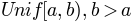 multiply the output of random_sample by (b-a) and add a:
(b - a) * random_sample() + a
Parameters: size : int or tuple of ints, optional
Output shape. If the given shape is, e.g.,
(m, n, k), thenm * n * ksamples are drawn. Default is None, in which case a single value is returned.Returns: out : float or ndarray of floats
Array of random floats of shape size (unless
size=None, in which case a single float is returned).Examples
>>> np.random.random_sample() 0.47108547995356098 >>> type(np.random.random_sample()) <type 'float'> >>> np.random.random_sample((5,)) array([ 0.30220482, 0.86820401, 0.1654503 , 0.11659149, 0.54323428])
Three-by-two array of random numbers from [-5, 0):
>>> 5 * np.random.random_sample((3, 2)) - 5 array([[-3.99149989, -0.52338984], [-2.99091858, -0.79479508], [-1.23204345, -1.75224494]])
experiment.probSelect module¶
| Author: | Dominic Hunt |
|---|---|
| Reference: | Opponent actor learning (OpAL): Modeling interactive effects of striatal dopamine on reinforcement learning and choice incentive. Collins, A. G. E., & Frank, M. J. (2014). Psychological Review, 121(3), 337–66. doi:10.1037/a0037015 |
-
experiment.probSelect.choice(a, size=None, replace=True, p=None)¶ Generates a random sample from a given 1-D array
New in version 1.7.0.
Parameters: a : 1-D array-like or int
If an ndarray, a random sample is generated from its elements. If an int, the random sample is generated as if a was np.arange(n)
size : int or tuple of ints, optional
Output shape. If the given shape is, e.g.,
(m, n, k), thenm * n * ksamples are drawn. Default is None, in which case a single value is returned.replace : boolean, optional
Whether the sample is with or without replacement
p : 1-D array-like, optional
The probabilities associated with each entry in a. If not given the sample assumes a uniform distribution over all entries in a.
Returns: samples : 1-D ndarray, shape (size,)
The generated random samples
Raises: ValueError
If a is an int and less than zero, if a or p are not 1-dimensional, if a is an array-like of size 0, if p is not a vector of probabilities, if a and p have different lengths, or if replace=False and the sample size is greater than the population size
See also
randint,shuffle,permutationExamples
Generate a uniform random sample from np.arange(5) of size 3:
>>> np.random.choice(5, 3) array([0, 3, 4]) >>> #This is equivalent to np.random.randint(0,5,3)
Generate a non-uniform random sample from np.arange(5) of size 3:
>>> np.random.choice(5, 3, p=[0.1, 0, 0.3, 0.6, 0]) array([3, 3, 0])
Generate a uniform random sample from np.arange(5) of size 3 without replacement:
>>> np.random.choice(5, 3, replace=False) array([3,1,0]) >>> #This is equivalent to np.random.permutation(np.arange(5))[:3]
Generate a non-uniform random sample from np.arange(5) of size 3 without replacement:
>>> np.random.choice(5, 3, replace=False, p=[0.1, 0, 0.3, 0.6, 0]) array([2, 3, 0])
Any of the above can be repeated with an arbitrary array-like instead of just integers. For instance:
>>> aa_milne_arr = ['pooh', 'rabbit', 'piglet', 'Christopher'] >>> np.random.choice(aa_milne_arr, 5, p=[0.5, 0.1, 0.1, 0.3]) array(['pooh', 'pooh', 'pooh', 'Christopher', 'piglet'], dtype='|S11')
-
class
experiment.probSelect.probSelect(**kwargs)[source]¶ Bases:
experiment.experimentTemplate.experiment- Probabilistic selection task based on Genetic triple dissociation reveals multiple roles for dopamine in reinforcement learning.
- Frank, M. J., Moustafa, A. a, Haughey, H. M., Curran, T., & Hutchison, K. E. (2007). Proceedings of the National Academy of Sciences of the United States of America, 104(41), 16311–16316. doi:10.1073/pnas.0706111104
Many methods are inherited from the experiment.experiment.experiment class. Refer to its documentation for missing methods.
Parameters: rewardProb : float in range [0,1], optional
The probability that a reward is given for choosing action A. Default is 0.7
actRewardProb : dictionary, optional
A dictionary of the potential actions that can be taken and the probability of a reward. Default {0:rewardProb, 1:1-rewardProb, 2:0.5, 3:0.5}
rewardSize : float, optional
The size of reward given if successful. Default 1
numActions : int, optional
The number of actions that can be chosen at any given time, chosen at random from actRewardProb. Default 2
learningLen : int, optional
The number of trials in the learning phase. As there is no feeback in the trasfer phase there is no transfer phase. Default is 100
plotArgs : dictionary, optional
Any arguments that will be later used by
experimentPlot. Refer to its documentation for more details.Notes
The experiment is broken up into two sections: a learning phase and a transfer phase. Participants choose between pairs of four actions: A, B, M1 and M2. Each provides a reward with a different probability: A:P>0.5, B:1-P<0.5, M1=M2=0.5. The transfer phase has all the action pairs but no feedback. This class only covers the learning phase, but models are expected to be implemented as if there is a transfer phase.
Attributes
Name (string) The name of the class used when recording what has been used. -
Name= 'probSelect'¶
-
class
experimentPlot(expSet, expParams, expLabels, modelSet, modelParams, modelLabels, plotArgs)[source]¶ Bases:
experiment.experimentPlot.experimentPlot- Desired plots:
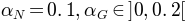 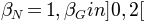
Plot the range of 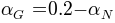 for 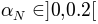 and 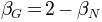 for 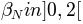 with the Y-axis being Choose(A) = prob(A) - prob(M), Avoid(B) = prob(M) - prob(B), Bias = choose(A) - avoid(B),
-
class
probSelect.experimentSetPlot(expSets, expParams, expLabels, modelSets, modelParams, modelLabels, plotArgs)[source]¶ Bases:
experiment.experimentSetPlot.experimentSetPlot- Desired plots:
Plot Positive vs negative choice bias against 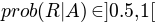 with:
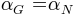, varying 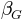 relative to 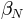 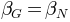, varying 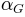 relative to
Plot time against
 , 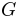, 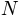 and 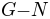
with varying and constant
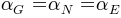 and
, 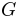, 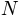 and 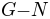
with varying and constant
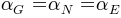 and
-
probSelect.next()[source]¶ Produces the next stimulus for the iterator
Returns: stimulus : None
nextValidActions : Tuple of length 2 of ints
The list of valid actions that the model can respond with.
Raises: StopIteration
-
probSelect.outputEvolution()[source]¶ Plots and saves files containing all the relavant data for this experiment run
-
experiment.probSelect.probSelectStimDirect()[source]¶ Processes the selection stimuli for models expecting just the event
Returns: deckStim : function
The function expects to be passed a tuple containing the event and the last action. The event is an int and the action is {0,1}. The function returns a list of length 2.
See also
Examples
>>> from experiment.probSelect import probSelectStimDirect >>> stim = probSelectStimDirect() >>> stim(1,0) (1, 1) >>> stim(0,0) (1, 0)
Attributes
Name (string) The identifier of the function
-
experiment.probSelect.rand(d0, d1, ..., dn)¶ Random values in a given shape.
Create an array of the given shape and propagate it with random samples from a uniform distribution over
[0, 1).Parameters: d0, d1, ..., dn : int, optional
The dimensions of the returned array, should all be positive. If no argument is given a single Python float is returned.
Returns: out : ndarray, shape
(d0, d1, ..., dn)Random values.
See also
Notes
This is a convenience function. If you want an interface that takes a shape-tuple as the first argument, refer to np.random.random_sample .
Examples
>>> np.random.rand(3,2) array([[ 0.14022471, 0.96360618], #random [ 0.37601032, 0.25528411], #random [ 0.49313049, 0.94909878]]) #random